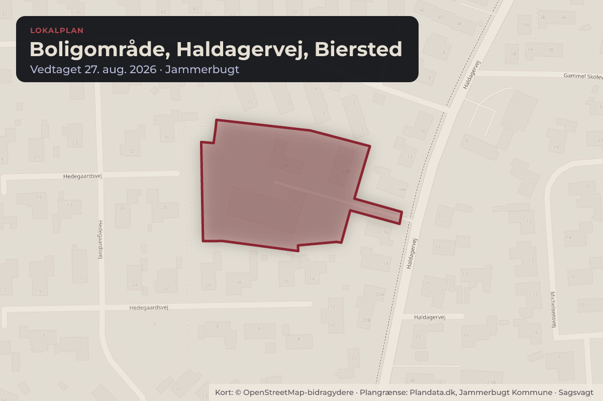
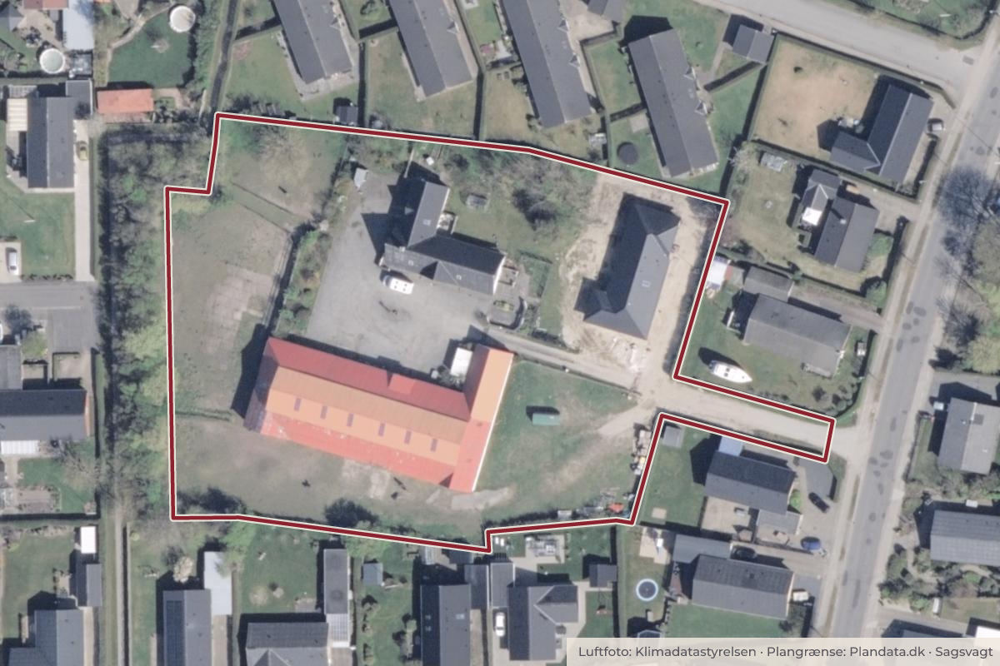

Besluttet 10. august, Klima-, Teknik- og Miljøudvalg, Jammerbugt
Endelig vedtagelse af Lokalplan 28-008 Boligområde, Haldagervej, Biersted
Vækst- og Udviklingsforvaltningen indstiller, at Klima-, Teknik- og Miljøudvalget anbefaler, at Kommunalbestyrelsen godkender, at Lokalplan 28-008 vedtages endeligt.

Kort: © OpenStreetMap-bidragydere. Plangrænse: Plandata.dk, Jammerbugt Kommune.

Har du et billede fra Boligområde, Haldagervej, Biersted? Send det til os
Kort fortalt
- Hvem
- Klima-, Teknik- og Miljøudvalg, Jammerbugt Kommune
- Hvornår
- Mandag 10. august 2026
- Status
- Besluttet. Anbefales godkendt.
Læs hele sagen Kommunens egen tekst
Sagsfremstilling
Der er tidligere sendt Forslag til Lokalplan 28-008 til politisk godkendelse og efterfølgende 8
ugers høring. Sagsforløbet vedr. Forslag til Lokalplan 28-008 er vedhæftet som bilag.
Lokalplanforslaget har været i offentlig høring i 8 uger fra den 1. maj til den 26. juni 2026. Der
er ikke indkommet bemærkninger i høringsperioden.
Miljøvurdering
Afgørelsen om, at der ikke skal udarbejdes miljøvurdering for lokalplanen kunne inden 4 uger
påklages til Planklagenævnet. Der er ikke klaget over afgørelsen vedr. miljøvurdering.
Tidsplan
Forventet tidsplan for godkendelse af Lokalplan 28-008
Forslag
Klima-, Teknik- og Miljøudvalget 13. april 2026
Økonomiudvalget 22. april 2026
Kommunalbestyrelsen 30. april 2026
Forslag til Lokalplan 28-008 udsendes umiddelbart herefter i 8 ugers høring
Endelig
Klima-, Teknik- og Miljøudvalget 10. august 2026
Økonomiudvalget 19. august 2026
Kommunalbestyrelsen 27. august 2026
Den endelige vedtagelse af lokalplanen offentliggøres umiddelbart herefter.
Retsgrundlag
Planloven (Bekendtgørelse af lov om planlægning).
Miljøvurderingsloven (Bekendtgørelse af lov om miljøvurdering af planer og programmer og af
konkrete projekter (VVM)).
Høring/borger- og brugerinddragelse
Lokalplanforslaget har været udsendt i offentlig høring i 8 uger fra den 1. maj til den 26. juni
Der er ikke indkommet bemærkninger i høringsperioden.
Indstilling
Vækst- og Udviklingsforvaltningen indstiller, at Klima-, Teknik- og Miljøudvalget
anbefaler, at Kommunalbestyrelsen godkender, at Lokalplan 28-008 vedtages endeligt.
Beslutning
Anbefales godkendt.
Kilde: Jammerbugt Kommune, Klima-, Teknik- og Miljøudvalg, referat fra mødet mandag 10. august 2026, punkt 4. Læs den originale sag hos kommunen.